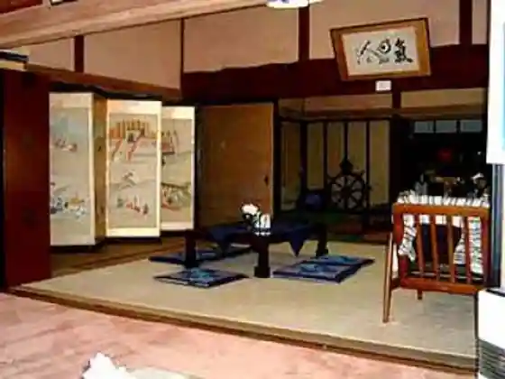
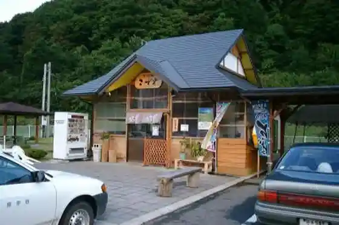
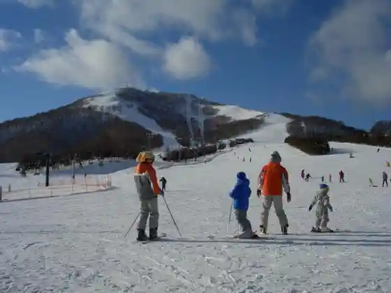

Iwate Prefectural Jido Kan (Iwate Kodomo Forest)
Ichinohe, Iwate · 0195-35-3888 · Official / source link
Historic House Resutoran (Urara Tei)
Ichinohe, Iwate · 0195-32-3551 · Official / source link

Soba Tokoro Kozuya
Ichinohe, Iwate · 0195-34-2040 · Official / source link

Ichinohe Sogo Sports Park
Ichinohe, Iwate · 0195-33-4444 · Official / source link
Okunaka Yamataka Hara Ski Area
Ichinohe, Iwate · 0195-35-3131 · Official / source link

Okunaka Yama no Highlands Jierato Yuki Akari
Ichinohe, Iwate · 0195-35-3131 · Official / source link
Okunaka Yamataka Hara Onsen Kosei Baths
Ichinohe, Iwate · 0195-35-3131 · Official / source link
Mandai Kan
Ichinohe, Iwate · 0195-33-2211 · Official / source link
Ichinohe Kanko Tenmondai
Ichinohe, Iwate · 0195-33-1211 · Official / source link
Takamori Highlands
Ichinohe, Iwate · 0195-33-2111 · Official / source link
Momiji Koyu Sha
Ichinohe, Iwate · 0195-32-3981 · Official / source link
Gosho no Iseki
Ichinohe, Iwate · 0195-32-2652 · Official / source link
Kanan Ranch
Ichinohe, Iwate · 0195-35-3505 · Official / source link
Ichi no He Tewaza Kogei Kan
Ichinohe, Iwate · 0195-33-3993 · Official / source link
Nishidake Yogyojo Tsuri Hori
Ichinohe, Iwate · 0195-35-3131 · Official / source link
Torigoe Kannon
Ichinohe, Iwate · 0195-33-2111 · Official / source link
Fujishima no Fuji
Ichinohe, Iwate · 0195-33-2111 · Official / source link